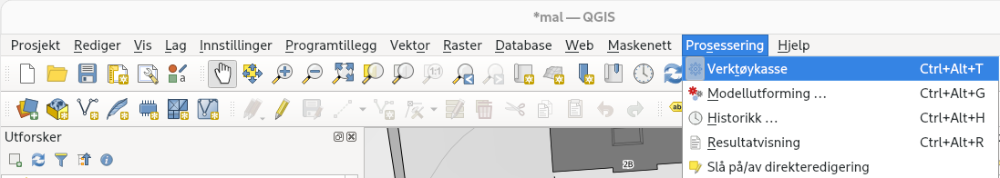

Ta gjennomsnittet av koordinater#
Ta gjennomsnittet av koordinater i qgis#
I QGIS er det et innebygd verktøy for å ta gjennomsnittet av en liste med koordinater. Dette funker med de fleste format som KML, GPX og CSV.
Først må man laste inn fila med den statiske målingen:
For å få opp Prossesering - verktøykasse på høyre side må den aktiveres i Prosseseringsmenyen
I verktøykassa velger dere Gjennomsnittskoordinat(er). Det er et søkefelt på toppen for å finne frem.
I vinduet som dukker opp kan dere la alt stå og trykke Kjør. Hvis dere vil kan dere lagre punktet som en fil ved å trykke på ... knappen under Gjennomsnittskoordinater
Nå skal punktet ha dukket opp i QGIS.
For å se koordinatene kan dere velge Identifiser objekter verktøyet og trykke på punktet i kartet:

X og Y er koordinatene i prosjektes koordinatsystem (UTM32), mens MEAN_X og MEAN_Y er koordinatene fra fila, som regel geografiske koordinater.
Ta gjennomsnitt av koordinater med excel#
Her er en måte å ta gjennomsnittet av koordinater i excel, det anbefales å bruke QGIS eller python istedet.
1. Konvertering fra KML til CSV (Lengde og breddegrader)#
Benytt følgende nettside for å konvertere KML-filen til en CSV fil: https://anyconv.com/kml-to-csv-converter/
Åpne CSV filen i Excel. Det kan være litt utfordrende å åpne en CSV fil riktig i Excel dersom dere ikke har gjort dette før. Prøv dere frem litt, og så kan dere spørre om hjelp dersom dere ikke forstår hvorfor det ikke fungerer som dere forventet.
Resultatfilen inneholder lengde- og breddegrader kun i de første 2 kolonene.
I Excel, fjern de andre kolonene fra filen og lagre filen på nytt som en CSV fil.
2. Konvertering fra CSV (Lengde og breddegrader) til CSV (UTM)#
Benytt følgende nettside for konvertering til UTM: http://www.zonums.com/online/coords/cotrans.php?module=13
Trykk på Upload file. Velg csv filen med lengde og breddegrader og trykk Accept
Bruk innstillingene som vist i bildet under, men pass på at Lat Lon rekkefølgen er riktig i csv filen. Det vil si hvis lengdegrader er første kolonne så skal dere bruke Lon Lat i «columns», eller blir det Lat Lon.
Trykk Transform
Copy paste resultatdataen inn i en teksteditor som Notepad++
Lagre filen med extension .csv
Åpne denne filen i Excel
Beregn gjennomsnittet av alle Nord og Øst koordinater. Dette blir da deres beste estimat for det korrekte koordinatet
Beregn standardavvik av alle Nord og Øst koordinater. Dette blir da deres beste estimat på nøyaktigheten av koordinatet deres.